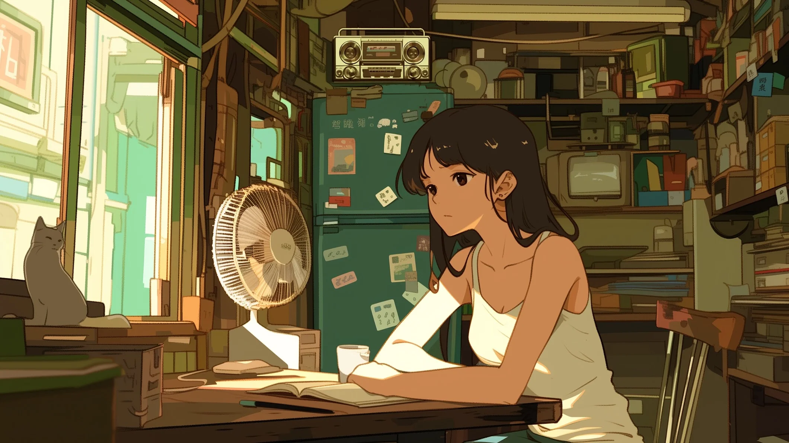

Journal · 2026-08-04
江西省九江市濂溪区
今天我们都很早地起床了，7点多钟就去下一楼吃饭了。但我还是很困啊，我就先吃了点，然后再去睡，然后再下来吃完的。
哎呀，我发现，我的表妹，竟然还用我的平板玩蛋仔派对！一个上午和中午都跟线上的朋友聊天，边聊边玩，聊得可起劲了！
我问她：「要是你爸妈知道你拿我的平板玩蛋仔派对，他们会怎么想？」
她很聪明啊，直接回答：「他们会怎么知道？这是你的平板！」
哎呀，我感觉有点无言以对了。其实他们玩游戏我并不反对，放松一下吧。但我特别害怕的就是，小孩子玩游戏还总是约上那些狗操的朋友一起玩游戏，在线上玩，那一定会被他们带坏了，被那些狐朋狗友给带坏了！在游戏中找那些乱七八糟的成就感，肯定是不靠谱的！
所以我做了一件让我的表妹有些不高兴的事：我把她在我平板上的账号注销了！游戏账号名下的所有的东西都一干二净了，都没了！哦，确实很惊喜呀！
下午的时候，我就吃了点东西，一些小零食吧，然后学了一些德语。我顺便还教了表弟一些重要的知识点。表妹就一个人，嗯，默默地在一楼看电视机。
我觉得晚上，还是要复习一下今天学过的知识，还有就是想一想今天接触到的一些信息。一定要让自己的大脑活跃，并且聪明起来。能够复盘总该是一件好事！

We all got up really early today—headed downstairs for breakfast a little past 7. But I was still so sleepy. I ate a bit first, then went back to sleep, then came down again to finish eating.
Oh man, I discovered that my girl cousin was still using my tablet to play Eggy Party! She spent the whole morning and noon chatting with online friends while playing, totally into it!
I asked her: "What would your parents think if they knew you were using my tablet to play Eggy Party?"
She's so clever—she shot back immediately: "How would they know? It's your tablet!"
Ugh, I was kind of speechless. Honestly, I don't really oppose them gaming—let them blow off some steam. But what I'm really scared of is kids always hooking up with those shitty friends to play games online. They'll definitely get corrupted by those lowlife buddies! Looking for some bullshit sense of achievement in video games? No way that's reliable!
So I did something that made my girl cousin a bit unhappy: I logged her account out of my tablet and deleted it! Everything under that game account—gone, wiped clean, nothing left! Oh, what a delightful surprise indeed!
In the afternoon, I had a bite to eat—just some snacks—and studied some German. I also taught my boy cousin some important stuff on the side. My girl cousin? She just sat by herself, quietly watching TV downstairs.
I think tonight I still need to review what I learned today, and also reflect on the information I came across. Gotta keep my brain active and sharp. Being able to review and reflect—that's always a good thing!
Aujourd'hui on s'est tous levés super tôt—descendus prendre le petit-déj' un peu après 7 heures. Mais j'étais encore tellement crevé. J'ai mangé un peu d'abord, puis je suis remonté pioncer, et redescendu finir de manger après.
Oh là là, j'ai découvert que ma petite cousine utilisait encore ma tablette pour jouer à Eggy Party ! Elle a passé toute la matinée et le midi à papoter avec des potes en ligne tout en jouant, à fond dedans !
Je lui ai demandé : « Tes parents, ils penseraient quoi s'ils savaient que t'utilises ma tablette pour jouer à Eggy Party ? »
Elle est trop maligne—elle a rétorqué direct : « Comment ils le sauraient ? C'est ta tablette ! »
Pfff, j'étais un peu sans voix. Franchement, qu'ils jouent aux jeux vidéo, ça me dérange pas—faut bien décompresser. Mais ce qui me fait vraiment flipper, c'est que les gamins traînent toujours avec ces putains de potes pourris pour jouer en ligne. Ils vont forcément se faire pourrir par ces fréquentations de merde ! Chercher une espèce de sentiment d'accomplissement bidon dans les jeux ? Aucune chance que ça tienne la route !
Alors j'ai fait un truc qui a un peu contrarié ma petite cousine : j'ai déconnecté et supprimé son compte de ma tablette ! Tout ce qui était sur ce compte de jeu—pouf, envolé, nettoyé, plus rien ! Oh, quelle agréable surprise, vraiment !
L'après-midi, j'ai grignoté un truc—des petites cochonneries—et j'ai étudié un peu d'allemand. Au passage, j'ai aussi filé quelques tuyaux importants à mon cousin. Ma petite cousine, elle est restée toute seule, ben, tranquillement en bas à regarder la télé.
Je pense que ce soir, faut quand même que je révise ce que j'ai appris aujourd'hui, et aussi que je rumine un peu les infos que j'ai croisées. Faut absolument que je garde le cerveau actif et bien affûté. Savoir faire le point, c'est jamais du temps perdu !
Wir sind heute alle super früh aufgestanden—kurz nach 7 ging's runter zum Frühstück. Aber ich war immer noch so müde. Hab erst ein bisschen gegessen, dann nochmal hingelegt und später runtergekommen, um fertig zu essen.
Ach je, ich hab entdeckt, dass meine kleine Cousine immer noch mein Tablet benutzt, um Eggy Party zu zocken! Den ganzen Vormittag und Mittag hat sie mit Online-Freunden gequatscht und nebenbei gespielt, total vertieft!
Ich hab sie gefragt: „Was würden deine Eltern denken, wenn sie wüssten, dass du auf meinem Tablet Eggy Party spielst?"
Sie ist so schlau—sie hat sofort gekontert: „Woher sollen die das wissen? Ist doch dein Tablet!"
Mann, ich war irgendwie sprachlos. Ehrlich gesagt hab ich nichts dagegen, dass sie spielen—sollen sie sich ruhig entspannen. Aber wovor ich echt Angst habe: dass die Kids sich beim Zocken immer mit diesen beschissenen Freunden zusammentun, um online zu spielen. Die werden doch garantiert von diesen Nullnummern verdorben! Sich im Spiel irgendeinen beschissenen Erfolg holen? Das kann doch nie im Leben tragfähig sein!
Also hab ich was gemacht, worüber meine kleine Cousine nicht so glücklich war: Ich hab ihren Account auf meinem Tablet gelöscht! Alles unter diesem Spielaccount—zack, weg, sauber, nichts mehr übrig! Oh, was für eine herrliche Überraschung!
Nachmittags hab ich dann was gegessen—nur so kleine Snacks—und ein bisschen Deutsch gelernt. Nebenbei hab ich meinem Cousin noch ein paar wichtige Sachen beigebracht. Meine kleine Cousine saß derweil ganz allein, naja, still unten und hat Fernsehen geguckt.
Ich glaube, heute Abend muss ich trotzdem wiederholen, was ich heute gelernt habe, und auch über die Infos nachdenken, die mir heute begegnet sind. Ich muss unbedingt mein Gehirn aktiv und fit halten. Reflektieren zu können ist doch immer eine gute Sache!